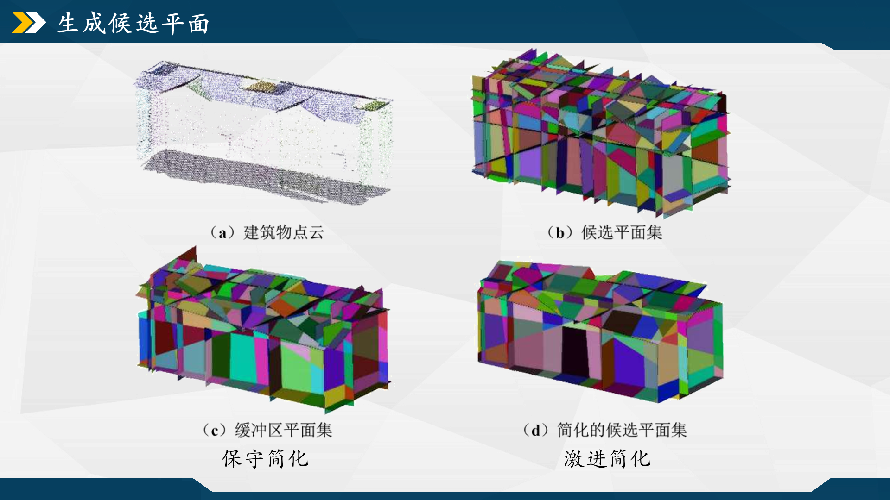

摘要：
中场休息结束！！ok，继续分析PolyFit中构造面片的代码。
1 2 3 4 5 6 7 8 9 10 11 12 13 14 15 16 17 18 19 SegMeshCandidate (mesh_candidate);SimpleMeshCandidate_V2 (mesh_candidate);AddMeshProperty (mesh_candidate);CGAL::internal::Candidate_confidences<Kernel> conf; conf.compute (cloud_plane, mesh_candidate);
候选平面相交细分 现在的mesh_candidate中存有若干块表示建筑特征区域朝向的大块面片，若直接以聚类区域边界划分面片，由于点云数据的噪声及区域表面的不平滑特性（可能表征为多个不同方向的平面），该过程往往会切割出一些非预期的平面；且点云覆盖度若较差，容易在模型中产生空洞或不连续的区域，从而降低重建模型的几何精度和视觉质量。而按照这种思路切分出的各区域面，还需要进行面片间的复杂拓扑关系处理后才能整合成模型表面，如相交面的边界融合/平滑、形状规则化[20] 、同名相交点的精度控制。
计算三重交点 按顺序取mesh_candidate中的三个平面，使用CGAL::intersection计算它们三个间是否交于一点，有则将点存入_triplet_intersections。老实说这一步放在这里就计算有点太早了，因为这些点的信息很后面才用到，得到了网络结构重建的ReconstructProcess::GetAdjacency函数中才会调取它们来计算面的邻接情况。
1 2 3 4 5 6 7 8 9 10 11 12 13 14 15 16 17 18 19 20 21 22 23 24 25 26 27 28 29 30 31 32 33 34 35 std::vector<const Kernel::Point_3*> intersecting_points_; _triplet_intersections.clear (); if (_supporting_planes.size () < 4 ) return ; for (std::size_t i = 0 ; i < _supporting_planes.size (); ++i){ const Kernel::Plane_3* plane1 = _supporting_planes[i]; for (std::size_t j = i + 1 ; j < _supporting_planes.size (); ++j) { const Kernel::Plane_3* plane2 = _supporting_planes[j]; for (std::size_t k = j + 1 ; k < _supporting_planes.size (); ++k) { const Kernel::Plane_3* plane3 = _supporting_planes[k]; CGAL_assertion (plane1 < plane2 && plane2 < plane3); if (plane1 == plane2 || plane1 == plane3 || plane2 == plane3) continue ; CGAL::Object obj = CGAL::intersection (*plane1, *plane2, *plane3); if (const Kernel::Point_3* pt = CGAL::object_cast <Kernel::Point_3>(&obj)) { Kernel::Point_3* new_point = new Kernel::Point_3 (*pt); _triplet_intersections[plane1][plane2][plane3] = new_point; intersecting_points_.push_back (new_point); } else continue ; } } }
确定相交面（及其交点） 这一小节的目的是确定mesh_candidate内某个大块面与哪些大块面存在相交关系。遍历每个面，取出当前面的下标index_face_i及其平面方程plane_face_i。再套一个同样的遍历取候选切面f，通过函数HypothesisPlaneProcess::compute_intersections()计算两个面的交点数量，根据相交点的情况将相交面存入intersecting_faces。
1 2 3 4 5 6 7 8 9 10 11 12 13 14 15 16 17 18 19 20 21 22 23 24 25 26 27 28 29 30 31 32 33 34 35 36 37 38 39 40 41 42 43 44 std::vector<Polygon_mesh::Face_index> all_faces (mesh_candidate.faces().begin(), mesh_candidate.faces().end()) ;for (std::size_t i = 0 ; i < all_faces.size (); ++i){ Polygon_mesh::Face_index index_face_i = all_faces[i]; const Kernel::Plane_3* plane_face_i = face_supporting_planes[index_face_i]; typename Polygon_mesh::template Property_map<Polygon_mesh::Face_index, const Kernel::Plane_3*> face_supporting_planes = mesh_candidate.template property_map <Polygon_mesh::Face_index, const Kernel::Plane_3*>("f:supp_plane" ).first; std::set<Polygon_mesh::Face_index> intersecting_faces; for (auto f : mesh_candidate.faces ()) { const Kernel::Plane_3* plane_cutting = face_supporting_planes[index_face_i]; CGAL_assertion (plane_cutting != nullptr ); std::vector<Polygon_mesh::Vertex_index> existing_vts; std::vector<EdgePos> new_vts; compute_intersections (mesh_candidate, f, plane_cutting, existing_vts, new_vts); bool is_intersect_fPlane = false ; if (existing_vts.size () == 2 ) { if (!halfedge_exists (existing_vts[0 ], existing_vts[1 ], mesh_candidate)) is_intersect_fPlane = true ; } else if (existing_vts.size () + new_vts.size () == 2 ) is_intersect_fPlane = true ; if (is_intersect_fPlane) intersecting_faces.insert (f); } if (intersecting_faces.empty ()) continue ; std::vector<Polygon_mesh::Face_index> cutting_faces (intersecting_faces.begin(), intersecting_faces.end()) ; }
代码中创造了两个变量，存储mesh_candidate已有点下标的existing_vts和存储两平面相交产生的新点的对象new_vts。由于它们的值取决于compute_intersections()，而后面相交关系的if判断也是基于这两变量得到的，不难发现compute_intersections()的交点计算过程才是这小节的重点。来看看compute_intersections函数中对这这两个变量的处理逻辑。
1 2 3 4 5 6 7 8 9 10 11 12 13 14 15 16 17 18 19 20 21 22 23 24 25 26 27 28 29 30 31 32 33 34 35 36 37 38 39 40 41 42 43 44 45 46 47 48 49 50 51 52 53 54 55 56 57 58 59 60 61 62 63 64 65 66 67 68 69 70 71 72 73 74 75 76 77 78 79 80 81 82 83 84 85 86 87 88 89 90 91 92 93 94 95 96 97 98 99 100 101 102 103 104 105 void HypothesisPlaneProcess::compute_intersections (const Polygon_mesh & mesh, Polygon_mesh::Face_index face, const Kernel::Plane_3 * plane_cutting, std::vector<Polygon_mesh::Vertex_index>& existing_vts, std::vector<EdgePos>& new_vts) existing_vts.clear (); new_vts.clear (); typename Polygon_mesh::template Property_map<Polygon_mesh::Face_index, const Kernel::Plane_3*> face_supporting_planes = mesh.template property_map <Polygon_mesh::Face_index, const Kernel::Plane_3*>("f:supp_plane" ).first; const Kernel::Plane_3* supporting_plane = face_supporting_planes[face]; if (supporting_plane == plane_cutting) return ; typename Polygon_mesh::template Property_map<Polygon_mesh::Edge_index, std::set<const Kernel::Plane_3*> > edge_supporting_planes = mesh.template property_map<Polygon_mesh::Edge_index, std::set<const Kernel::Plane_3*> >("e:supp_plane" ).first; Polygon_mesh::Halfedge_index cur = mesh.halfedge (face); Polygon_mesh::Halfedge_index end = cur; do { Polygon_mesh::Edge_index ed = mesh.edge (cur); const std::set<const Kernel::Plane_3*>& supporting_planes = edge_supporting_planes[ed]; if (supporting_planes.find (plane_cutting) != supporting_planes.end ()) return ; Polygon_mesh::Vertex_index s_vd = mesh.source (cur); Polygon_mesh::Vertex_index t_vd = mesh.target (cur); const Kernel::Point_3& s = mesh.points ()[s_vd]; const Kernel::Point_3& t = mesh.points ()[t_vd]; CGAL::Oriented_side s_side = plane_cutting->oriented_side (s); CGAL::Oriented_side t_side = plane_cutting->oriented_side (t); if (t_side == CGAL::ON_ORIENTED_BOUNDARY) { if (s_side == CGAL::ON_ORIENTED_BOUNDARY) return ; else existing_vts.push_back (t_vd); } else if ((s_side == CGAL::ON_POSITIVE_SIDE && t_side == CGAL::ON_NEGATIVE_SIDE) || (s_side == CGAL::ON_NEGATIVE_SIDE && t_side == CGAL::ON_POSITIVE_SIDE)) { FT s_sdist = CGAL::squared_distance (*plane_cutting, s); FT t_sdist = CGAL::squared_distance (*plane_cutting, t); if (s_sdist <= CGAL::snap_squared_distance_threshold <FT>()) existing_vts.push_back (s_vd); else if (t_sdist <= CGAL::snap_squared_distance_threshold <FT>()) existing_vts.push_back (t_vd); else { const Kernel::Plane_3* plane1 = *(supporting_planes.begin ()); const Kernel::Plane_3* plane2 = *(supporting_planes.rbegin ()); const Kernel::Plane_3* plane3 = const_cast <const Kernel::Plane_3*>(plane_cutting); if (plane3 != plane1 && plane3 != plane2) { sort_increasing (plane1, plane2, plane3); CGAL::Object obj = CGAL::intersection (*plane1, *plane2, *plane3); Kernel::Point_3* p; if (const Kernel::Point_3* pt = CGAL::object_cast <Kernel::Point_3>(&obj)) { p = new Kernel::Point_3 (*pt); _triplet_intersections[plane1][plane2][plane3] = p; } else p = nullptr ; if (p) { if (CGAL::squared_distance (*p, s) <= CGAL::snap_squared_distance_threshold <FT>()) existing_vts.push_back (s_vd); else if (CGAL::squared_distance (*p, t) <= CGAL::snap_squared_distance_threshold <FT>()) existing_vts.push_back (t_vd); else new_vts.push_back (EdgePos (ed, p)); } else std::cerr << "Fatal error: should have intersection" << std::endl; } else std::cerr << "Fatal error: should not have duplicated planes." << std::endl; } } else { } cur = mesh.next (cur); } while (cur != end); }
师弟SY曾与我探讨了这块的内容（感谢.jpg），一并总结下：
平面分割 开始对当前面进行切割。以faces_to_be_cut存储待分割的面，按序取一个候选切面进行切割后，原来的面不再存在，它被多个新的面片取代，将它们存入faces_to_be_cut，并在下一轮循环中使用下一个候选切面来切割。
1 2 3 4 5 6 7 8 9 10 11 12 13 14 15 16 17 18 19 20 21 22 23 24 25 26 27 28 29 30 31 32 33 34 35 36 std::vector<Polygon_mesh::Face_index> faces_to_be_cut; faces_to_be_cut.push_back (index_face_i); while (!intersecting_faces.empty ()){ Polygon_mesh::Face_index cutting_face = *(intersecting_faces.begin ()); const Kernel::Plane_3* cutting_plane = face_supporting_planes[cutting_face]; std::set<Polygon_mesh::Face_index> new_faces; std::set<Polygon_mesh::Face_index> remained_faces; for (std::size_t j = 0 ; j < faces_to_be_cut.size (); ++j) { Polygon_mesh::Face_index current_face = faces_to_be_cut[j]; std::vector<Polygon_mesh::Face_index> tmp = split_plane (current_face, cutting_plane, mesh_candidate); new_faces.insert (tmp.begin (), tmp.end ()); if (tmp.empty ()) { remained_faces.insert (current_face); } } faces_to_be_cut = std::vector <Polygon_mesh::Face_index>(new_faces.begin (), new_faces.end ()); faces_to_be_cut.insert (faces_to_be_cut.end (), remained_faces.begin (), remained_faces.end ()); intersecting_faces.erase (cutting_face); } for (std::size_t j = 0 ; j < cutting_faces.size (); ++j) split_plane (cutting_faces[j], plane_face_i, mesh_candidate);
核心的分割过程在HypothesisPlaneProcess::split_plane()函数和HypothesisPlaneProcess::split_edge()函数中，本质是使用CGAL::Euler::split_edge()来在要分割的边上插入一个新顶点，并返回指向新顶点的半边索引；用CGAL::Euler::split_face()在给定面上插入一条新边，最后为新的两个面片赋予所属平面、所属区域等属性。
1 2 3 4 5 6 7 8 9 10 11 12 13 14 15 16 17 18 19 20 21 22 23 24 25 26 27 28 29 30 31 32 33 34 35 36 37 38 39 40 41 42 43 44 45 46 47 48 49 50 51 52 53 54 55 56 57 58 59 60 61 62 63 64 65 66 67 68 69 70 71 72 73 74 75 76 77 78 79 80 81 82 83 84 85 86 87 88 89 90 91 92 93 94 95 96 97 98 99 100 101 102 103 104 105 106 107 108 109 110 111 112 113 114 115 116 117 118 119 120 121 122 123 std::vector<Polygon_mesh::Face_index> HypothesisPlaneProcess::split_plane (Polygon_mesh::Face_index face, const Kernel::Plane_3 * cutting_plane, Polygon_mesh & mesh) std::vector<Polygon_mesh::Face_index> new_faces; typename Polygon_mesh::template Property_map<Polygon_mesh::Face_index, const Kernel::Plane_3*> face_supporting_planes = mesh.template property_map <Polygon_mesh::Face_index, const Kernel::Plane_3*>("f:supp_plane" ).first; const Kernel::Plane_3* supporting_plane = face_supporting_planes[face]; if (supporting_plane == cutting_plane) return new_faces; typename Polygon_mesh::template Property_map<Polygon_mesh::Face_index, CGAL::internal::Planar_segment<Kernel>*> face_supporting_segments = mesh.template property_map<Polygon_mesh::Face_index, CGAL::internal::Planar_segment<Kernel>*>("f:supp_segment" ).first; typename Polygon_mesh::template Property_map<Polygon_mesh::Edge_index, std::set<const Kernel::Plane_3*> > edge_supporting_planes = mesh.template property_map<Polygon_mesh::Edge_index, std::set<const Kernel::Plane_3*> >("e:supp_plane" ).first; CGAL::internal::Planar_segment<Kernel>* supporting_segment = face_supporting_segments[face]; Polygon_mesh::Property_map<Polygon_mesh::Face_index, std::size_t > face_region_map = mesh.property_map <Polygon_mesh::Face_index, std::size_t >("f:region_map" ).first; size_t index_region = face_region_map[face]; std::vector<Polygon_mesh::Vertex_index> existing_vts; std::vector<EdgePos> new_vts; compute_intersections (mesh, face, cutting_plane, existing_vts, new_vts); if (existing_vts.size () + new_vts.size () != 2 ) return new_faces; else if (existing_vts.size () == 2 ) { if (existing_vts[0 ] == existing_vts[1 ]) return new_faces; if (halfedge_exists (existing_vts[0 ], existing_vts[1 ], mesh)) return new_faces; } Polygon_mesh::Halfedge_index h0 = Polygon_mesh::null_halfedge (); Polygon_mesh::Halfedge_index h1 = Polygon_mesh::null_halfedge (); if (existing_vts.size () == 2 ) { h0 = mesh.halfedge (existing_vts[0 ]); h1 = mesh.halfedge (existing_vts[1 ]); } else if (existing_vts.size () == 1 ) { h0 = mesh.halfedge (existing_vts[0 ]); h1 = split_edge (mesh, new_vts[0 ], cutting_plane); } else if (new_vts.size () == 2 ) { h0 = split_edge (mesh, new_vts[0 ], cutting_plane); h1 = split_edge (mesh, new_vts[1 ], cutting_plane); } CGAL_assertion (h0 != Polygon_mesh::null_halfedge ()); CGAL_assertion (h1 != Polygon_mesh::null_halfedge ()); if (mesh.face (h0) != face) { Polygon_mesh::Halfedge_index end = h0; do { h0 = mesh.opposite (mesh.next (h0)); if (mesh.face (h0) == face) break ; } while (h0 != end); } CGAL_assertion (mesh.face (h0) == face); if (mesh.face (h1) != face) { Polygon_mesh::Halfedge_index end = h1; do { h1 = mesh.opposite (mesh.next (h1)); if (mesh.face (h1) == face) break ; } while (h1 != end); } CGAL_assertion (mesh.face (h1) == face); Polygon_mesh::Halfedge_index h = CGAL::Euler::split_face (h0, h1, mesh); if (h == Polygon_mesh::null_halfedge () || mesh.face (h) == Polygon_mesh::null_face ()) { std::cerr << "Fatal error. could not split face" << std::endl; return new_faces; } Polygon_mesh::Edge_index e = mesh.edge (h); edge_supporting_planes[e].insert (supporting_plane); edge_supporting_planes[e].insert (cutting_plane); CGAL_assertion (edge_supporting_planes[e].size () == 2 ); Polygon_mesh::Face_index f1 = mesh.face (h); face_supporting_segments[f1] = supporting_segment; face_supporting_planes[f1] = supporting_plane; face_region_map[f1] = index_region; new_faces.push_back (f1); Polygon_mesh::Face_index f2 = mesh.face (mesh.opposite (h)); face_supporting_segments[f2] = supporting_segment; face_supporting_planes[f2] = supporting_plane; new_faces.push_back (f2); face_region_map[f2] = index_region; return new_faces; }
1 2 3 4 5 6 7 8 9 10 11 12 13 14 15 16 17 18 19 20 21 22 23 24 25 26 27 28 29 30 31 32 33 34 35 36 37 38 39 40 41 42 43 44 Polygon_mesh::Halfedge_index HypothesisPlaneProcess::split_edge (Polygon_mesh & mesh, const EdgePos & ep, const Kernel::Plane_3 * cutting_plane) typename Polygon_mesh::template Property_map<Polygon_mesh::Edge_index, std::set<const Kernel::Plane_3*> > edge_supporting_planes = mesh.template property_map<Polygon_mesh::Edge_index, std::set<const Kernel::Plane_3*> >("e:supp_plane" ).first; typename Polygon_mesh::template Property_map<Polygon_mesh::Vertex_index, std::set<const Kernel::Plane_3*> > vertex_supporting_planes = mesh.template property_map<Polygon_mesh::Vertex_index, std::set<const Kernel::Plane_3*> >("v:supp_plane" ).first; std::set<const Kernel::Plane_3*> sfs = edge_supporting_planes[ep.edge]; CGAL_assertion (sfs.size () == 2 ); Polygon_mesh::Halfedge_index h = CGAL::Euler::split_edge (mesh.halfedge (ep.edge), mesh); if (h == Polygon_mesh::null_halfedge ()) return h; Polygon_mesh::Vertex_index v = mesh.target (h); if (v == Polygon_mesh::null_vertex ()) return Polygon_mesh::null_halfedge (); typename Polygon_mesh::template Property_map<Polygon_mesh::Vertex_index, Kernel::Point_3>& coords = mesh.points (); coords[v] = *ep.pos; Polygon_mesh::Edge_index e1 = mesh.edge (h); edge_supporting_planes[e1] = sfs; Polygon_mesh::Edge_index e2 = mesh.edge (mesh.next (h)); edge_supporting_planes[e2] = sfs; vertex_supporting_planes[v] = sfs; vertex_supporting_planes[v].insert (cutting_plane); CGAL_assertion (vertex_supporting_planes[v].size () == 3 ); return h; }
经平面相交细分后，mesh_candidate中的大块面片被切分为若干细碎面片。它们仍称为候选面片集，其中存在某种能表示为建筑表面模型的最优组合，等待着我们去发掘。
候选面集简化 先叠个甲：这一章节的内容并非原PolyFit的内容，是我自己加进去的“改进”内容，目的是去除明显冗余的候选面片集。[21] 、[22] 等文献中看到这类优化思路的改进PolyFit算法。
1 2 3 4 ①区域归类。对候选平面相交细分产生的每个分割面添加所属区域点云的属性映射，根据属性映射值查找属同一区域的多边形，将区域点云投影至多边形组成的平面。 ②标记缓冲区面片。对平面上的每个多边形，判断其内部是否存在投影点并进行标记。提取标记多边形的顶点，对所有使用该类顶点的多边形进行标记。该步骤是为了扩展被标记的候选平面，从而保证最终模型的闭合性。 ③边缘面查询。查询缓冲区面片集合中每个顶点被用于构成平面的次数。以次数为1的顶点所构成的平面视为边缘平面，需将其从面集内剔除。 ④重复步骤③，直至所有顶点被用于构成平面的次数不为1。输出该多边形网络为简化后的候选平面集合
不过，上述思路是V1版本的。V1版本的代码写得过于激进，现在回看简直一坨。我记得是先统计mesh_candidate中所有顶点所邻接的候选面个数，若有的点只被唯一一个面“所拥有”，则认为该点的相关面为边缘面并予以剔除。方法粗看没什么问题，但在执行这个处理前，我对mesh_candidate做了次初筛，可能破坏了原mesh内部很多能构成封闭结构的面片，导致很容易把候选面删除到只剩一块块分离的小团块。V1先放那了仅做留档参考，V2在剔除面的判断上做了点改动，仍然是一坨，它没实现理想效果。下面来看看代码中的整个流程。
区域归类 先套一层遍历，每轮循环取一块聚类点云。每个聚类区域的点下标在之前被记录至分段分段s，以此提取出一个聚类的点坐标到points_region中。然后，使用supporting_plane()函数来拟合平面，该函数内部是调用CGAL::linear_least_squares_fitting_3的最小二乘拟合方法来计算平面系数。再然后，调用to_2d()方法，将聚类的每个点投影到平面上并存储到points_region_2。
1 2 3 4 5 6 7 8 9 10 11 12 13 14 15 16 17 18 19 20 21 22 23 24 std::vector< Kernel::Point_3> vi_covered; for (size_t i_segment = 0 ; i_segment < _cloud_plane->planar_segments ().size (); i_segment++){ CGAL::internal::Planar_segment<Kernel>* s = _cloud_plane->planar_segments ()[i_segment]; std::vector<Kernel::Point_3> points_region; for (std::size_t i = 0 ; i < s->size (); ++i) { std::size_t idx = s->at (i); Kernel::Point_3 p = _cloud_plane->point_map ()[idx]; points_region.push_back (p); } const Kernel::Plane_3* plane_fitting = _cloud_plane->planar_segments ()[i_segment]->supporting_plane (); std::vector<Kernel::Point_2> points_region_2; for (const Kernel::Point_3& p : points_region) points_region_2. push_back (plane_fitting->to_2d (p)); }
标记缓冲区面片 候选的大块面片在两两细分前，我用f:region_map记录了面片所属的聚类，根据下标把所有属于本轮聚类点云的候选面片都找出来，存入到faces_polygon中，相当于把处理对象从整个复杂的mesh_candicate收束到一个平面上。接着，对faces_polygon中的每个面f，将它上面的轮廓点集points_polygon同样投影到拟合面上，将得到的二维点存入points_polygon_2。根据这些点，判断聚类点points_region_2是否落在f内，只要有一个聚类点会投影到f上，那该f需被记录，将它的顶点存入到vi_covered中。
1 2 3 4 5 6 7 8 9 10 11 12 13 14 15 16 17 18 19 20 21 22 23 24 25 26 27 28 29 30 31 32 33 34 35 36 37 38 39 40 41 42 43 44 45 std::vector<Polygon_mesh::Face_index> faces_polygon; for (const Polygon_mesh::Face_index& f : mesh_candidate.faces ()) if (mesh_candidate.property_map <Polygon_mesh::Face_index, std::size_t >("f:region_map" ).first[f] == i_segment) faces_polygon.push_back (f); GeometryCal obj_gc; for (const Polygon_mesh::Face_index& f : faces_polygon){ std::vector<Kernel::Point_3> points_polygon; std::vector<Polygon_mesh::Vertex_index> vi_polygon; CGAL::Vertex_around_face_circulator<Polygon_mesh> vcirc (mesh_candidate.halfedge(f), mesh_candidate) , done (vcirc) ; do { Polygon_mesh::Vertex_index vi = *vcirc; Kernel::Point_3 p = mesh_candidate.point (vi); vi_polygon.push_back (vi); points_polygon.push_back (p); ++vcirc; } while (vcirc != done); std::vector<Kernel::Point_2> points_polygon_2; for (const Kernel::Point_3& p : points_polygon) points_polygon_2. push_back (plane_fitting->to_2d (p)); for (Kernel::Point_2 p : points_region_2) if (obj_gc.isPointInPolygon (p, points_polygon_2)) { for (const Polygon_mesh::Vertex_index& vi : vi_polygon) { Kernel::Point_3 p = mesh_candidate.point (vi); if (std::find (vi_covered.begin (), vi_covered.end (), p) == vi_covered.end ()) vi_covered.push_back (p); } break ; } }
函数GeometryCal::isPointInPolygon()是GPT给的函数，思路参考射线法[23] ：从当前点引一条射线穿过多边形边界，记录其穿过的次数，交叉数为偶数时点在外侧，奇数时点在内侧。
1 2 3 4 5 6 7 8 9 10 11 12 13 14 15 16 17 18 19 20 21 bool GeometryCal::isPointInPolygon (const Kernel::Point_2 & point, const std::vector<Kernel::Point_2>& polygon) size_t n = polygon.size (); int count = 0 ; for (int i = 0 ; i < n; i++) { Kernel::Point_2 p1 = polygon[i]; Kernel::Point_2 p2 = polygon[(i + 1 ) % n]; if (point.y () == p1. y () && point.y () == p2. y () && point.x () >= std::min (p1. x (), p2. x ()) && point.x () <= std::max (p1. x (), p2. x ())) return true ; if (point.y () > std::min (p1. y (), p2. y ()) && point.y () <= std::max (p1. y (), p2. y ())) if (isLineIntersect (point, Kernel::Point_2 (point.x () + 1e9 , point.y ()), p1, p2)) count++; } return count % 2 == 1 ; }
此时vi_covered中存储有若干点，它们可构成聚类点云能投影到的候选面片。仍使用半边环绕器逐个取每个f上的点，当该点在vi_covered中有记录就把这个面存入缓冲面集faces_covered中。这部分写得很冗余，从V1那照抄套用属实难绷。
1 2 3 4 5 6 7 8 9 10 11 12 13 14 15 16 17 18 19 20 21 std::vector<Polygon_mesh::Face_index> faces_covered; for (const Polygon_mesh::Face_index& f : mesh_candidate.faces ()){ if (std::find (faces_covered.begin (), faces_covered.end (), f) != faces_covered.end ()) continue ; CGAL::Vertex_around_face_circulator<Polygon_mesh> vcirc (mesh_candidate.halfedge(f), mesh_candidate) , done (vcirc) ; do { Polygon_mesh::Vertex_index vi = *vcirc; Kernel::Point_3 p = mesh_candidate.point (vi); if (std::find (vi_covered.begin (), vi_covered.end (), p) != vi_covered.end ()) { faces_covered.push_back (f); break ; } ++vcirc; } while (vcirc != done); }
边缘面查询 有了缓冲面集faces_covered，那mesh_candidate中的其他候选面便视为边缘面，将它们下标记录为faces_delete后，使用CGAL::Euler::remove_face()将其移除，并在最后调用collect_garbage()对网络做一次修复。
1 2 3 4 5 6 7 8 9 10 11 12 13 14 15 16 17 18 std::vector<Polygon_mesh::Face_index> faces_delete; for (const Polygon_mesh::Face_index& f : mesh_candidate.faces ()){ if (std::find (faces_covered.begin (), faces_covered.end (), f) != faces_covered.end ()) continue ; faces_delete.push_back (f); } for (std::size_t i = 0 ; i < faces_delete.size (); ++i){ Polygon_mesh::Face_index f = faces_delete[i]; Polygon_mesh::Halfedge_index h = mesh_candidate.halfedge (f); CGAL::Euler::remove_face (h, mesh_candidate); } mesh_candidate.collect_garbage ();

计算候选面的置信度 添加额外的平面属性放下一节详述。那么现在，mesh_candidate中的多边形网络结构如上图所示，原来的多个大块面片经聚类点云切出外轮廓，又经过两两细分变为若干细碎的候选面片。为了从这堆碎片中选出一个最能描述物体几何形状的子集，作者定义了一种称为能量函数的方法来优化这个选择过程，该函数可以由多个能量项构成。[2] ），其中图b、c表示边能将相连面组合为一个更大的多边形，𝑐𝑜𝑟𝑛𝑒𝑟值为1；图d到g中的边可表示为模型边界，𝑐𝑜𝑟𝑛𝑒𝑟值为0。点覆盖项指模型中未覆盖点云的面片占比，它根据点簇在拟合面上的面积与拟合面总面积比值来确定。
1 2 3 4 5 6 7 CGAL::internal::Candidate_confidences<Kernel> conf; conf.compute (cloud_plane, mesh_candidate);
计算置信度源码 候选面属性计算的主流程位于compute_confidences.h的Candidate_confidences::compute()，源码如下：
1 2 3 4 5 6 7 8 9 10 11 12 13 14 15 16 17 18 19 20 21 22 23 24 25 26 27 28 29 30 31 32 33 34 35 36 37 38 39 40 41 42 43 44 45 46 47 48 49 50 51 52 53 54 55 56 57 58 59 60 61 62 63 64 65 66 67 68 69 70 71 72 73 74 75 76 77 78 79 template <typename Kernel>void Candidate_confidences<Kernel>::compute (const Point_set& point_set, Polygon_mesh& mesh) { const unsigned int K = 6 ; const typename Point_set::Point_map& points = point_set.point_map (); FT avg_spacing = compute_average_spacing <Concurrency_tag>(points, K); typename Polygon_mesh::template Property_map<Face_descriptor, std::size_t > face_num_supporting_points = mesh.template add_property_map <Face_descriptor, std::size_t >("f:num_supporting_points" ).first; typename Polygon_mesh::template Property_map<Face_descriptor, FT> face_areas = mesh.template add_property_map <Face_descriptor, FT>("f:face_area" ).first; typename Polygon_mesh::template Property_map<Face_descriptor, FT> face_covered_areas = mesh.template add_property_map <Face_descriptor, FT>("f:covered_area" ).first; typename Polygon_mesh::template Property_map<Face_descriptor, const Plane*> face_supporting_planes = mesh.template property_map <Face_descriptor, const Plane*>("f:supp_plane" ).first; FT degenerate_face_area_threshold = CGAL::snap_squared_distance_threshold <FT>() * CGAL::snap_squared_distance_threshold <FT>(); for (auto f : mesh.faces ()) { const Plane* supporting_plane = face_supporting_planes[f]; FT area = face_area (f, mesh); face_areas[f] = area; if (area > degenerate_face_area_threshold) { const std::vector<std::size_t >& indices = supporting_points (f, mesh, point_set); face_num_supporting_points[f] = indices.size (); std::vector<Point> pts; for (std::size_t i = 0 ; i < indices.size (); ++i) { std::size_t idx = indices[i]; const Point& p = points[idx]; pts.push_back (p); } FT covered_area (0 ) ; Alpha_shape_mesh<Kernel> alpha_mesh (pts.begin(), pts.end(), *supporting_plane) ; Polygon_mesh covering_mesh; FT radius = avg_spacing * FT (5.0 ); if (alpha_mesh.extract_mesh (radius * radius, covering_mesh)) { const typename Polygon_mesh::template Property_map<Vertex_descriptor, Point>& coords = covering_mesh.points (); for (auto face : covering_mesh.faces ()) { Polygon plg; Halfedge_around_face_circulator<Polygon_mesh> cir (covering_mesh.halfedge(face), covering_mesh) , done (cir) ; do { Halfedge_descriptor hd = *cir; Vertex_descriptor vd = covering_mesh.target (hd); const Point& p = coords[vd]; const Point2& q = supporting_plane->to_2d (p); plg.push_back (q); ++cir; } while (cir != done); covered_area += std::abs (plg.area ()); } } face_covered_areas[f] = covered_area; if (covered_area > area) face_covered_areas[f] = area; } else { face_num_supporting_points[f] = 0 ; face_covered_areas[f] = FT (0.0 ); } } }
添加额外的平面属性 这一小节是自己添加的内容，给候选面多增加一个离顶面距离的属性，试图为能量函数多加一个新能量项做准备。思路很简单，取每个面片的中心点，计算点到包围盒顶面的距离，再将该距离除以包围盒上下面的距离来归一化。实现函数在HypothesisPlaneProcess::AddMeshProperty()。
1 2 3 4 5 6 7 8 9 10 11 12 13 14 15 16 17 18 19 20 21 22 23 24 25 26 27 28 29 30 31 32 33 34 35 36 37 38 39 40 41 42 43 44 45 46 47 48 49 50 51 52 53 54 55 56 57 58 59 60 void HypothesisPlaneProcess::AddMeshProperty (Polygon_mesh & mesh_candidate) typename Polygon_mesh::template Property_map<Polygon_mesh::Face_index, double > face_roof = mesh_candidate.template add_property_map <Polygon_mesh::Face_index, double >("f:dist_boxTop" ).first; std::vector<Kernel::Point_3> vertices (mesh_candidate.number_of_vertices()) ; for (int i = 0 ; i < mesh_candidate.vertices ().size (); ++i) { const Polygon_mesh::Vertex_index v = mesh_candidate.vertices ().first[i]; vertices[i] = mesh_candidate.points ()[v]; } const Kernel::Iso_cuboid_3& box = CGAL::bounding_box (vertices.begin (), vertices.end ()); FT dx = box.xmax () - box.xmin (); FT dy = box.ymax () - box.ymin (); FT dz = box.zmax () - box.zmin (); std::vector<Kernel::Point_3> point_boxTop; point_boxTop.push_back (Kernel::Point_3 (box.xmin (), box.ymin (), box.zmax ())); point_boxTop.push_back (Kernel::Point_3 (box.xmax (), box.ymin (), box.zmax ())); point_boxTop.push_back (Kernel::Point_3 (box.xmax (), box.ymax (), box.zmax ())); point_boxTop.push_back (Kernel::Point_3 (box.xmin (), box.ymax (), box.zmax ())); Kernel::Plane_3 plane_boxTop; CGAL::linear_least_squares_fitting_3 (point_boxTop.begin (), point_boxTop.end (), plane_boxTop, CGAL::Dimension_tag <0 >()); for (const Polygon_mesh::Face_index& f : mesh_candidate.faces ()) { double x_center = 0.0f , y_center = 0.0f , z_center = 0.0f ; int num_p = 0 ; CGAL::Vertex_around_face_circulator<Polygon_mesh> vcirc (mesh_candidate.halfedge(f), mesh_candidate) , done (vcirc) ; do { Polygon_mesh::Vertex_index vi = *vcirc; Kernel::Point_3 p = mesh_candidate.point (vi); x_center += p.x (); y_center += p.y (); z_center += p.z (); ++num_p; ++vcirc; } while (vcirc != done); Kernel::Point_3 p_center (x_center / num_p, y_center / num_p, z_center / num_p) ; double dist_p2plane = std::sqrt (CGAL::squared_distance (p_center, plane_boxTop)) /(box.zmax () - box.zmin ()); face_roof[f] = dist_p2plane; } }
该属性目的是想提高“屋顶”候选面片在能量函数中的权重，当该项属性越接近0则表明面片越靠近顶部，若最终模型选取这类面的数量越多，那可以期望其顶面细节越丰富。不过单靠这个值是不可靠的，应该还需要加某种约束条件。从以前的测试结果来看并不理性，仍把代码放进来，仅为提供一个添加平面属性的参考。
参考文献&引用 [1] https://3d.bk.tudelft.nl/liangliang/ [2] https://3d.bk.tudelft.nl/liangliang/publications/2017/polyfit/polyfit.html [3] https://www.youtube.com/watch?v=_0brfDFkIkc [4] Linfu X ,Han H ,Qing Z , et al. Combined Rule-Based and Hypothesis-Based Method for Building Model Reconstruction from Photogrammetric Point Clouds [J]. Remote Sensing, 2021, 13 (6): 1107-1107. [5] Nan L , Wonka P .PolyFit: Polygonal Surface Reconstruction from Point Clouds[C]//International Conference on Computer Vision.IEEE, 2017. https://github.com/Kitware/CMake/releases/download/v3.29.3/cmake-3.29.3-windows-x86_64.zip https://boostorg.jfrog.io/artifactory/main/release/1.85.0/source/boost_1_85_0.7z https://github.com/CGAL/cgal/releases/download/v5.6.1/CGAL-5.6.1.zip https://gitlab.com/libeigen/eigen/-/archive/3.4.0/eigen-3.4.0.zip https://scipopt.org/download.php?fname=SCIPOptSuite-9.0.0-win64-VS15.exe https://zenodo.org/records/4390295#.Y0eIodJBxuV https://www.zhihu.com/question/277599635/answer/2149719454 https://zhuanlan.zhihu.com/p/668272208 https://doc.cgal.org/latest/Polygonal_surface_reconstruction/index.html#Chapter_PolygonalSurfaceReconstruction https://zhuanlan.zhihu.com/p/90858099 https://zhuanlan.zhihu.com/p/668272208 https://doc.cgal.org/latest/HalfedgeDS/index.html https://segmentfault.com/q/1010000043819426 https://doc.cgal.org/latest/BGL/group__PkgBGLEulerOperations.html#gaa386d0cdef3b5d6ef43d6b503392dbcd [20] https://doc.cgal.org/latest/Shape_regularization/index.html https://doi.org/10.3390/rs13061107 https://doi.org/10.1016/j.isprsjprs.2022.09.017 https://blog.csdn.net/u013279723/article/details/106265948